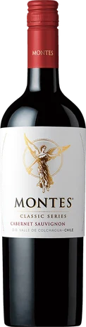
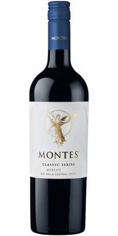
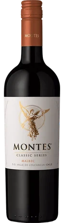
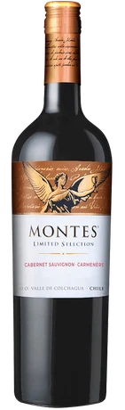
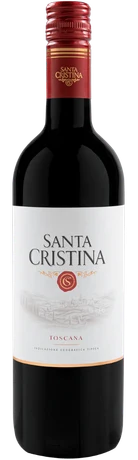
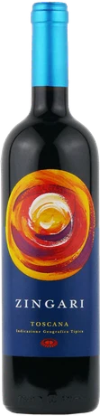
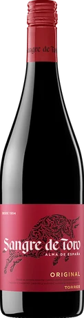
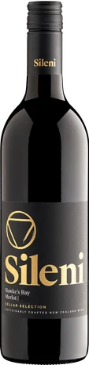
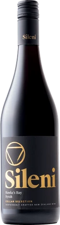
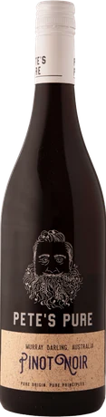

AFFORDABLE WINE / RED
3,000円以下の安ウマ赤ワイン10選｜ワイン会・東京の交流会で楽しむコスパ赤
公開：2026年10月21日 ／ GLASS VIBE編集
赤ワイン選びは「高いほどおいしい」「濃いほど上質」と決めつけなくて大丈夫。3,000円以下でも、まろやかなメルロ、軽やかな印象のピノ・ノワール、スパイス感のあるシラーなど、好みに近づく道筋はたくさんあります。東京のワイン会に興味がある方や、友人との食事・交流会で赤ワインを楽しみたい方へ、写真付きで10本を紹介します。
価格確認日：2026年10月21日。参考価格はエノテカ・オンラインの商品ページに掲載された750ml単品の税込価格です。送料は別途。市場全体の平均価格・最安値ではありません。価格・在庫・ヴィンテージは変わるため購入時に確認してください。
ワイン会で楽しむ、赤ワインの選び方
渋みが気になるなら口当たり、料理と合わせたいなら酸や果実味、印象を変えたいなら品種を選ぶ軸に。軽やかなものから飲み応えのあるものへ進めると比較しやすくなります。赤ワインも暖かい部屋で温まりすぎると印象が変わるので、室温という言葉だけに頼らず様子を見ましょう。

ラベル・年号は販売品と異なる場合があります。
モンテス・クラシック・シリーズ・カベルネ・ソーヴィニヨン
チリ／モンテス
バランス型・ほどよい渋み ／ 750ml
カベルネ・ソーヴィニヨンを知る最初の候補。タンニンと果実味のバランスが紹介されており、濃さだけで赤を選びたくないときに役立ちます。同じシリーズのメルロと揃えれば、価格をそろえた品種比較ができます。
料理の提案：牛肉のグリル
ワイン会での楽しみ方：メルロと渋みの感じ方を比べる。

ラベル・年号は販売品と異なる場合があります。
モンテス・クラシック・シリーズ・メルロ
チリ／モンテス
まろやか・ジューシー ／ 750ml
滑らかな口当たりと果実感が特徴のメルロ。渋みが心配な初心者にも、まず少量から試してもらう候補です。ワイン交流会では「重い・軽い」だけでなく、「丸い・引き締まる」といった感覚の言葉も使えます。
料理の提案：ハンバーグやミートボール
ワイン会での楽しみ方：カベルネとの違いを食事と一緒に確認。

ラベル・年号は販売品と異なる場合があります。
モンテス・クラシック・シリーズ・マルべック
チリ／モンテス
プラム・コク ／ 750ml
プラムやブラックベリー、樽由来のバニラの要素が紹介されるマルベック。定番のカベルネやメルロから一歩広げたいときに。2,000円以内で品種の違いを話せるのが、このシリーズを並べる面白さです。
料理の提案：ローストビーフやきのこ料理
ワイン会での楽しみ方：果実の印象と余韻の長さを共有。

ラベル・年号は販売品と異なる場合があります。
モンテス・リミテッド・セレクション・カベルネ・ソーヴィニヨン・カルメネール
チリ／モンテス
凝縮感・樽のニュアンス ／ 750ml
カベルネ・ソーヴィニヨンとカルメネールを使うブレンド。果実の凝縮感やバニラの要素を楽しむ方向です。予算内で飲み応えのある一本を足したいときに、軽やかな赤との対比が作れます。
料理の提案：牛肉の煮込み
ワイン会での楽しみ方：クラシックのカベルネと造りの違いを探す。

ラベル・年号は販売品と異なる場合があります。
サンタ・クリスティーナ・ロッソ
イタリア／サンタ・クリスティーナ
食事に寄り添うバランス ／ 750ml
アンティノリが手掛ける、食事と合わせる場面を考えやすい赤。派手な濃さを狙うより、料理とのまとまりを重視したいときの候補です。イタリア料理を囲むワイン会なら、前菜から主菜へつなぐ一本として。
料理の提案：トマトソースのパスタ
ワイン会での楽しみ方：料理の前後で酸や果実味の印象を比較。

ラベル・年号は販売品と異なる場合があります。
ジンガリ
イタリア／ペトラ
フレッシュな果実・ブレンド ／ 750ml
トスカーナのペトラが4品種をブレンドして造る赤。果実の明るさや飲み心地を楽しむ方向の一本です。単一品種の赤ばかりを並べず、ブレンドの調和にも目を向けたい飲み比べに加えてみてください。
料理の提案：ハーブを使った肉料理
ワイン会での楽しみ方：単一品種とブレンドの楽しみ方を話す。

ラベル・年号は販売品と異なる場合があります。
サングレ・デ・トロ オリジナル
スペイン／トーレス
豊かな果実・なめらか ／ 750ml
ガルナッチャとカリニェナを使うスペインの定番赤。果実味と滑らかさを軸に、普段の食事と合わせて選べるタイプです。チリ、イタリア、スペインと国を変えるだけでも、交流会の飲み比べに幅が出ます。
料理の提案：ミートソースや肉のタパス
ワイン会での楽しみ方：同価格帯のカベルネと飲み口を比べる。

ラベル・年号は販売品と異なる場合があります。
セラー・セレクション・メルロ
ニュージーランド／シレーニ
滑らか・甘辛い料理にも ／ 750ml
メルロの滑らかな質感と果実味が紹介される一本。洋食だけでなく、甘辛い味付けの料理も比較の相手になります。東京で持ち寄りのワイン会をするなら、家庭料理との組み合わせを楽しむテーマも作れます。
料理の提案：肉じゃがや照り焼き
ワイン会での楽しみ方：チリのメルロと同じ料理で比較。

ラベル・年号は販売品と異なる場合があります。
セラー・セレクション・シラー
ニュージーランド／シレーニ
スパイシー・優しい果実味 ／ 750ml
シラー特有のスパイス感と果実味を知る候補。カベルネやメルロでは感じにくかった香りを探すことで、会話のきっかけが増えます。味の濃さだけでなく、香りの個性で赤ワインを選びたい人に。
料理の提案：黒こしょうを添えた牛肉
ワイン会での楽しみ方：香りから連想するスパイスを共有。

ラベル・年号は販売品と異なる場合があります。
ピーツ・ピュア・ピノ・ノワール
オーストラリア／ピーツ・ピュア
チャーミングな果実・酸 ／ 750ml
ピノ・ノワール主体で、果実感と酸の調和が紹介される赤。1,000円台でピノ系の雰囲気を試したい人に向きます。重厚な赤と並べるときは先に飲み、繊細な印象を拾いやすくしましょう。
料理の提案：鶏肉やきのこのソテー
ワイン会での楽しみ方：濃い赤の前に飲み、軽やかさを楽しむ。
まずは3本で、小さな飲み比べを
品種の違いを知るなら、モンテス・クラシックのカベルネ・ソーヴィニヨン、メルロ、マルベックを。確認価格の合計は5,940円で、同じ造り手・同じ価格にそろえられます。ワイン会では「渋み」「果実」「余韻」のどれか一つをテーマにすると、詳しくない人も自分の言葉で参加できます。
渋い赤ワインが苦手でも、ワイン会を楽しめますか？
もちろんです。苦手な味を無理に飲む必要はありません。好みを主催者に伝え、まろやかなタイプや白・泡も含めて選びましょう。この記事の赤も、濃さの競争ではなく好みを見つけるための候補です。
味わいの特徴は各販売元の商品説明を参考に編集したもので、全商品の実飲レビューではありません。料理と飲み比べの組み合わせは編集部の提案です。商品写真の出典は各銘柄に記載しています。
東京で、ワインと会話を楽しみたい方へ
GLASS VIBEは、東京・湯島を拠点に準備しているワイン交流会です。一人でも、ワインに詳しくなくても、自分のペースで。記事で紹介した銘柄がイベントで提供されるとは限りません。